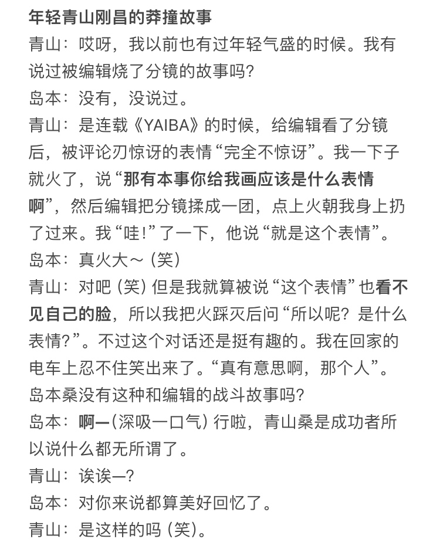
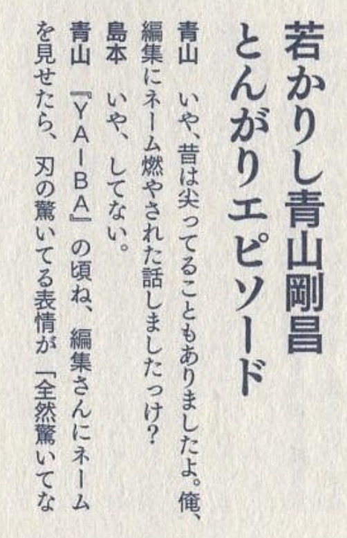
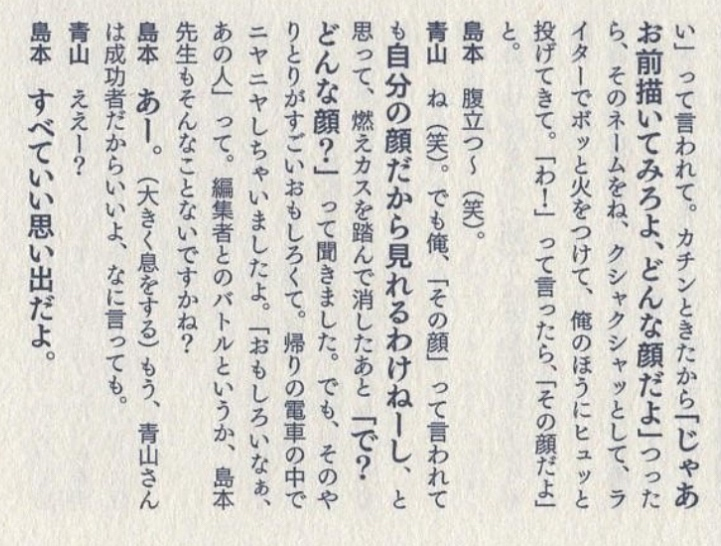

最近针对青山当初被编辑部限制，无法按照自己的想法画名柯的讨论又多了起来。在这里放一段《青山刚昌30周年书》中青山刚昌✖️岛本和彦的对谈。是关于他年轻时和编辑正面冲突的一个故事。可以感受一下当年的小学馆编辑面对年轻作者的态度。
青山在漫画行业摸爬滚打多年，后来慢慢被磨平了棱角，变圆滑了。或许也发生过他没有在访谈里说到的其他矛盾和冲突，但是他没有再选择正面硬刚，最多把人画成被害者恶搞一下，或者借台词阴阳怪气两句。
名柯一开始也是按要求画了将近十卷的日常，心中的怨言逐渐积累。被按头画日常单元剧不能搞黑衣组织的主线；周刊连载负担太重，想诡计很麻烦；时不时还要画彩页，比漫画还费事；第十卷的时候编辑部的大人物希望他把平次画成纯粹的对手角色，要求性格要坏一些，等等。种种因素让他忍无可忍了才带着助手们跑去拉斯维加斯，差一点想要结束连载柯南。在拉斯维加斯听说名柯要做剧场版，才决定继续连载下去。
或许是剧场版改编让他获得了更大的话语权，在随后的第十二卷我们也看到了精彩的🌞🌛🌟暗号、龙舌兰的登场和组织线的重启，服部平次作为侦探对手+好哥们的再次登场和识破柯南身份，顺便加一点自己的福艾私货（笑）
青山在漫画行业摸爬滚打多年，后来慢慢被磨平了棱角，变圆滑了。或许也发生过他没有在访谈里说到的其他矛盾和冲突，但是他没有再选择正面硬刚，最多把人画成被害者恶搞一下，或者借台词阴阳怪气两句。
名柯一开始也是按要求画了将近十卷的日常，心中的怨言逐渐积累。被按头画日常单元剧不能搞黑衣组织的主线；周刊连载负担太重，想诡计很麻烦；时不时还要画彩页，比漫画还费事；第十卷的时候编辑部的大人物希望他把平次画成纯粹的对手角色，要求性格要坏一些，等等。种种因素让他忍无可忍了才带着助手们跑去拉斯维加斯，差一点想要结束连载柯南。在拉斯维加斯听说名柯要做剧场版，才决定继续连载下去。
或许是剧场版改编让他获得了更大的话语权，在随后的第十二卷我们也看到了精彩的🌞🌛🌟暗号、龙舌兰的登场和组织线的重启，服部平次作为侦探对手+好哥们的再次登场和识破柯南身份，顺便加一点自己的福艾私货（笑）



这个对谈里也有对动画改编的吐槽
岛本：什么时候会遇到心理挫折？
青山：动画没有按自己的希望做的时候吧（笑）“真的吗！那句台词都要删吗！”这样。因为被动画化过一次后，就不会再次动画化了。明明不希望偷工减料的地方却偷懒了就会很失望。心里会想“诶——”。
岛本：什么时候会遇到心理挫折？
青山：动画没有按自己的希望做的时候吧（笑）“真的吗！那句台词都要删吗！”这样。因为被动画化过一次后，就不会再次动画化了。明明不希望偷工减料的地方却偷懒了就会很失望。心里会想“诶——”。
2024-03-25 02:16 | 圈量子:这里很有可能是在说樱花班的动画删除了新一的内心独白。同样出自三十周年书的访谈：“不能慌，要像福尔摩斯一样表现出一副很厉害的样子”这是新一的原则。但是在动画里，这句话居然被删掉了！我还想着“这句不可以删！”，跟导演发过LINE，说“那里很重要！”2024-03-25 03:26 | 黑羽风若:回复 圈量子 :被删了的多了，我觉得不一定特指某一次，在意的人每一次都会比上次更介意，换成我指不定记账记了多少个小本本
卧薪尝胆
青山：这仇，我记下了！（权+1）
曾经应该发生过很大的争吵吧，心疼
刚子：“还好我很坚强”
删了也就罢了，还乱加
直播？
无论是小学馆 还是小学馆的gagaga文库 都有很多恶心人的编辑
2024-03-25 11:32 | 圈量子:sexy田中小姐那件事带出了一些对过去小学馆的科普，让大家回顾了一下编辑以前有多不干人事。
 静待刚圣复仇
静待刚圣复仇老贼报复动画组，故意黑毛利兰，不敲门，破坏公物，拉窗帘，游泳池戏水
结果现在自己疯狂水日常
tms以前在赌73不会持久，一旦73水平下滑或者放弃柯南，tms就会收购柯南版权，到时候想怎么创作就可以为所欲为。